JEE Main 2024 (Session 2), 8 Apr Shift 2: worked solutions for review
Questions and options are NTA’s own images; the green option is NTA’s final key. Every solution below was written by Claude
and checked against NTA’s final key. It is not NTA’s solution. Please mark anything unclear or wrong.
Q1 · Mathematics · MCQ · ID 87827056058
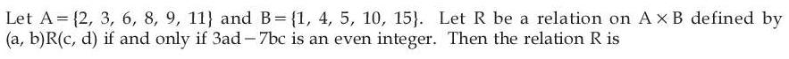
Hint 1: Work modulo 2: when is 3ad − 7bc even?
Hint 2: 3ad − 7bc is even exactly when ad and bc have the same parity.
What this tests: Equivalence relations
1. Reflexive: 3ab − 7ba = −4ab, even.
2. Symmetric: the two expressions add to −4(ad + bc), an even number, so both are even together.
3. Not transitive: (3, 1) R (2, 4) and (2, 4) R (2, 1), but (3, 1) is not related to (2, 1) (3 × 1 odd, 1 × 2 even).
Answer: (4)
If this felt hard: An even element like (2, 4) relates to almost everything, which breaks transitivity. Revise Relations and Functions.
Claude’s answer: 4 · NTA final key: 4 · agrees · Answer recomputed by script (tools/verify_pyq_solutions.py)
Q2 · Mathematics · MCQ · ID 87827056059
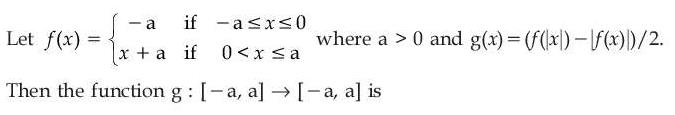
Hint 1: Work out g separately for x > 0, x = 0 and x < 0.
Hint 2: For x > 0: g = 0. For x < 0: g = −x/2. At 0: f(0) = −a.
What this tests: One-one and onto
1. x in (0, a]: g(x) = 0 (many-one).
2. x in [−a, 0): g(x) = −x/2 in (0, a/2]; g(0) = −a.
3. Not one-one, and values like −a/2 are never taken: not onto.
Answer: (4)
If this felt hard: Revise Relations and Functions.
Claude’s answer: 4 · NTA final key: 4 · agrees · Answer recomputed by script (tools/verify_pyq_solutions.py)
Q3 · Mathematics · MCQ · ID 87827056060
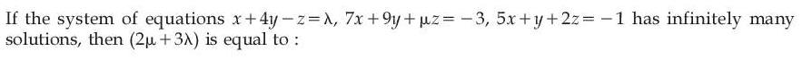
(1) 
(3) 
Hint 1: Set the coefficient determinant to 0 first.
Hint 2: det = 19μ, so μ = 0. Then a replaced determinant gives λ.
What this tests: Linear systems with infinitely many solutions
1. μ = 0.
2. det[[1, 4, λ],[7, 9, −3],[5, 1, −1]] = −38 − 38λ = 0, so λ = −1.
3. 2μ + 3λ = −3.
Answer: (2)
If this felt hard: Revise Determinants.
Claude’s answer: 2 · NTA final key: 2 · agrees · Answer recomputed with SymPy (tools/verify_pyq_solutions.py)
Q4 · Mathematics · MCQ · ID 87827056061
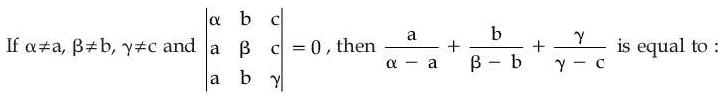
(1) 
(2) 
(3) 
(4) 
Hint 1: Subtract the third row from the first two rows.
Hint 2: With p = α − a, q = β − b, r = γ − c the determinant becomes pqγ + prb + qra.
What this tests: Properties of determinants
1. pqγ + prb + qra = 0.
2. Divide by pqr: γ/r + b/q + a/p = 0.
Answer: (2)
If this felt hard: Revise row operations in Determinants.
Claude’s answer: 2 · NTA final key: 2 · agrees · Answer recomputed with SymPy (tools/verify_pyq_solutions.py)
Q5 · Mathematics · MCQ · ID 87827056062
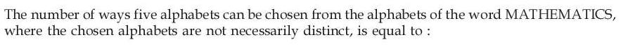
Hint 1: MATHEMATICS has M, A, T twice and H, E, I, C, S once: 8 different letters.
Hint 2: Cases: 5 different; one pair + 3 different; two pairs + 1 different.
What this tests: Selections with repeated letters
1. All different: C(8,5) = 56.
2. One pair: 3 × C(7,3) = 105.
3. Two pairs: C(3,2) × 6 = 18.
4. Total 179.
Answer: (3)
If this felt hard: Revise Permutations and Combinations.
Claude’s answer: 3 · NTA final key: 3 · agrees · Answer recomputed by script (tools/verify_pyq_solutions.py)
Q6 · Mathematics · MCQ · ID 87827056063
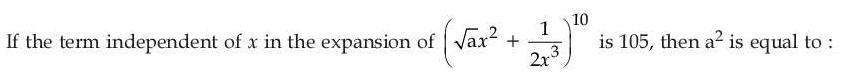
(1) 
(2) 
(3) 
(4) 
Hint 1: General term: find r with power of x equal to 0.
Hint 2: Power = 2(10 − r) − 3r = 0 gives r = 4.
What this tests: Binomial theorem
1. C(10,4) a3/24 = 105, so a3 = 8, a = 2.
2. a2 = 4.
Answer: (2)
If this felt hard: Revise the general term.
Claude’s answer: 2 · NTA final key: 2 · agrees · Answer recomputed with SymPy (tools/verify_pyq_solutions.py)
Q7 · Mathematics · MCQ · ID 87827056064
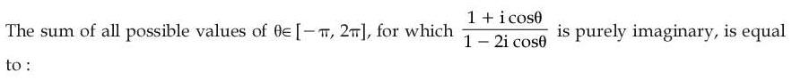
Hint 1: Multiply by the conjugate of the denominator and set the real part to 0.
Hint 2: Real part ∝ 1 − 2cos2θ.
What this tests: Purely imaginary complex numbers
1. cos2θ = 1/2.
2. In [−π, 2π]: ±π/4, ±3π/4, 5π/4, 7π/4.
3. Sum = 3π.
Answer: (2)
If this felt hard: Revise Complex Numbers.
Claude’s answer: 2 · NTA final key: 2 · agrees · Answer recomputed with SymPy (tools/verify_pyq_solutions.py)
Q8 · Mathematics · MCQ · ID 87827056065
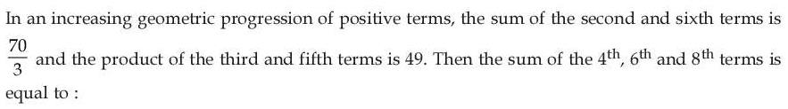
Hint 1: a3a5 = (ar3)2.
Hint 2: ar3 = 7; ar + ar5 = 7/r2 + 7r2 = 70/3.
What this tests: Geometric progression
1. r2 + 1/r2 = 10/3, so r2 = 3 (increasing).
2. Sum = ar3(1 + r2 + r4) = 7 × 13 = 91.
Answer: (3)
If this felt hard: Revise Sequences and Series.
Claude’s answer: 3 · NTA final key: 3 · agrees · Answer recomputed with SymPy (tools/verify_pyq_solutions.py)
Q9 · Mathematics · MCQ · ID 87827056066
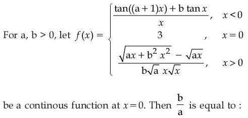
(3) 
Hint 1: Find each one-sided limit and set it equal to 3.
Hint 2: Left: (a + 1) + b. Right: rationalise.
What this tests: Continuity
1. Left limit: a + 1 + b = 3, so a + b = 2.
2. Right limit: b2x2/((√(ax + b2x2) + √(ax)) b√a x√x) → b/(2a) = 3.
3. b = 6a: b/a = 6.
Answer: (1)
If this felt hard: Revise Limits.
Claude’s answer: 1 · NTA final key: 1 · agrees · Answer recomputed with SymPy (tools/verify_pyq_solutions.py)
Q10 · Mathematics · MCQ · ID 87827056067
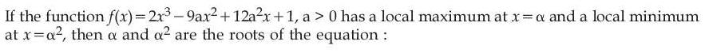
Hint 1: Factorise f'(x).
Hint 2: f' = 6(x − a)(x − 2a): max at a, min at 2a.
What this tests: Maxima and minima
1. α = a and α2 = 2a, so a = 2.
2. Roots 2 and 4: x2 − 6x + 8 = 0.
Answer: (3)
If this felt hard: Revise Application of Derivatives.
Claude’s answer: 3 · NTA final key: 3 · agrees · Answer recomputed with SymPy (tools/verify_pyq_solutions.py)
Q11 · Mathematics · MCQ · ID 87827056068
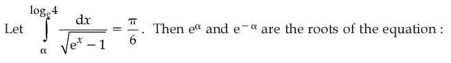
Hint 1: Put u = √(ex − 1).
Hint 2: ∫ 2 du/(1 + u2) = 2 tan−1u.
What this tests: Integration by substitution
1. 2π/3 − 2tan−1√(eα − 1) = π/6, so eα = 2.
2. Roots 2 and 1/2: 2x2 − 5x + 2 = 0.
Answer: (3)
If this felt hard: Revise Integrals.
Claude’s answer: 3 · NTA final key: 3 · agrees · Answer recomputed with SymPy (tools/verify_pyq_solutions.py)
Q12 · Mathematics · MCQ · ID 87827056069
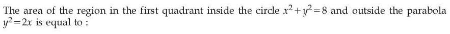
Hint 1: Find where the circle meets the parabola in the first quadrant.
Hint 2: They meet at (2, 2). Use horizontal strips for the part inside the parabola.
What this tests: Area between curves
1. Quarter circle area = 2π.
2. Part inside the parabola: ∫02(√(8 − y2) − y2/2) dy = (2 + π) − 4/3 = π + 2/3.
3. Required area = 2π − π − 2/3 = π − 2/3.
Answer: (1)
If this felt hard: Revise Application of Integrals.
Claude’s answer: 1 · NTA final key: 1 · agrees · Answer recomputed with SymPy (tools/verify_pyq_solutions.py)
Q13 · Mathematics · MCQ · ID 87827056070
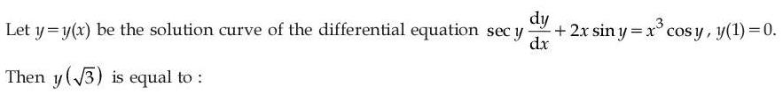
(1)
(2)
(3) 
(4)
Hint 1: Divide by cos y and put u = tan y.
Hint 2: u' + 2xu = x3; IF = ex^{2}.
What this tests: Linear DE by substitution
1. u ex^{2} = (x2 − 1)ex^{2}/2 + C; y(1) = 0 gives C = 0.
2. At √3: tan y = 1, y = π/4.
Answer: (3)
If this felt hard: Revise Differential Equations.
Claude’s answer: 3 · NTA final key: 3 · agrees · Answer recomputed with SymPy (tools/verify_pyq_solutions.py)
Q14 · Mathematics · MCQ · ID 87827056071
(1)
(2) 
(3) 
(4) 
Hint 1: Angle between OA and OB: tan θ = |m1 − m2|/|1 + m1m2|, or use vectors.
Hint 2: |5a − 4| = |10 + 2a|.
What this tests: Angle between lines
1. a = 14/3 or a = −6/7.
2. |product| = 4.
Answer: (4)
If this felt hard: Revise Straight Lines.
Claude’s answer: 4 · NTA final key: 4 · agrees · Answer recomputed with SymPy (tools/verify_pyq_solutions.py)
Q15 · Mathematics · MCQ · ID 87827056072
(1) 
(2) 
(3) 
(4) 
Hint 1: Image formula: P' = P − 2(ax + by + c)/(a2 + b2) × (a, b).
Hint 2: x + 2y − 2 at (−4, 5) is 4.
What this tests: Image of a point in a line
1. Image = (−4, 5) − (8/5)(1, 2) = (−28/5, 9/5).
2. Distance from (−4, 3): √(64/25 + 36/25) = 2.
Answer: (2)
If this felt hard: Revise Straight Lines.
Claude’s answer: 2 · NTA final key: 2 · agrees · Answer recomputed with SymPy (tools/verify_pyq_solutions.py)
Q16 · Mathematics · MCQ · ID 87827056073
(1) 
(2)
(3) 
(4)
Hint 1: The lines are parallel (directions (2,3,4) and (4,6,8)).
Hint 2: SD = |AB × d|/|d|.
What this tests: Distance between parallel lines
1. AB = (2 − λ, 0, 4); AB × d = (−12, 4λ, 6 − 3λ).
2. (25λ2 − 36λ + 180)/29 = 169/29: λ = 1 or 11/25.
Answer: (3)
If this felt hard: Revise Three Dimensional Geometry.
Claude’s answer: 3 · NTA final key: 3 · agrees · Answer recomputed with SymPy (tools/verify_pyq_solutions.py)
Q17 · Mathematics · MCQ · ID 87827056074
(1)
(2)
(3)
(4)
Hint 1: Move everything to one side: (a + b − 2a + 3b) × c = 0.
Hint 2: c = λ(4b − a) = λ(40, −3, 3).
What this tests: Cross product equations
1. (2a + 3b)·c = 1670λ = 1670, λ = 1.
2. |c|2 = 1600 + 9 + 9 = 1618.
Answer: (3)
If this felt hard: Revise Vector Algebra.
Claude’s answer: 3 · NTA final key: 3 · agrees · Answer recomputed with SymPy (tools/verify_pyq_solutions.py)
Q18 · Mathematics · MCQ · ID 87827056075
(1)
(2)
(3) 
(4) 
Hint 1: r = (b + c)/|b + c|.
Hint 2: b + c = (5, 2, λ − 5).
What this tests: Unit vectors and dot product
1. (3λ − 6) = 3√(29 + (λ − 5)2).
2. 6λ = 50, λ = 25/3, 3λ = 25.
Answer: (1)
If this felt hard: Revise Vector Algebra.
Claude’s answer: 1 · NTA final key: 1 · agrees · Answer recomputed with SymPy (tools/verify_pyq_solutions.py)
Q19 · Mathematics · MCQ · ID 87827056076
(1)
(2) 
(3) 
(4) 
Hint 1: Bayes' theorem with equal prior 1/3.
Hint 2: P(1-rupee) from X, Y, Z: 5/9, 4/9, 3/9.
What this tests: Bayes' theorem
1. P(Y | 1-rupee) = 4/(5 + 4 + 3) = 1/3.
Answer: (2)
If this felt hard: Revise Probability.
Claude’s answer: 2 · NTA final key: 2 · agrees · Answer recomputed by script (tools/verify_pyq_solutions.py)
Q20 · Mathematics · MCQ · ID 87827056077
(1) 
(2) 
(3) 
(4)
Hint 1: cos 36° = (√5 + 1)/4, sin 18° = (√5 − 1)/4.
Hint 2: Ratio = (8√5 − 2)/(2√5 + 8).
What this tests: Standard trigonometric values
1. Rationalise: (4√5 − 1)(4 − √5)/11 = (17√5 − 24)/11.
2. a + b + c = 17 + 24 + 11 = 52.
Answer: (3)
If this felt hard: Revise Trigonometric Functions.
Claude’s answer: 3 · NTA final key: 3 · agrees · Answer recomputed with SymPy (tools/verify_pyq_solutions.py)
Q21 · Mathematics · Numerical · ID 87827056078
Hint 1: Put t = x + 2. Then |x + 1||x + 3| = |t2 − 1|.
Hint 2: With u = |t|: |u2 − 1| − 4u + 5 = 0.
What this tests: Modulus equations
1. u ≥ 1: (u − 2)2 = 0, u = 2.
2. u < 1: u2 + 4u − 6 = 0 gives u ≈ 1.16, rejected.
3. t = ±2: 2 roots.
Answer: 2
If this felt hard: Revise Quadratic Equations.
Claude’s answer: 2 · NTA final key: 2 · agrees · Answer recomputed with SymPy (tools/verify_pyq_solutions.py)
Q22 · Mathematics · Numerical · ID 87827056079
Hint 1: Reflect the point (7, 2) in the mirror line. The incident ray passes through this image.
Hint 2: Image of (7, 2) in 2x + y = 6 is (−1, −2).
What this tests: Reflection of light rays in a line
1. Incident ray through (3, 10) and (−1, −2): slope 3, 3x − y + 1 = 0.
2. a = 3, b = −1: 9 + 1 − 9 = 1.
Answer: 1
If this felt hard: Revise Straight Lines.
Claude’s answer: 1 · NTA final key: 1 · agrees · Answer recomputed with SymPy (tools/verify_pyq_solutions.py)
Q23 · Mathematics · Numerical · ID 87827056080
Hint 1: Row k has k terms. Which term numbers are in row 10?
Hint 2: Terms 46 to 55 of 2, 5, 8, … (nth term 3n − 1).
What this tests: AP sums
1. Sum = 3(46 + … + 55) − 10 = 3 × 505 − 10 = 1505.
Answer: 1505
If this felt hard: Revise Sequences and Series.
Claude’s answer: 1505 · NTA final key: 1505 · agrees · Answer recomputed by script (tools/verify_pyq_solutions.py)
Q24 · Mathematics · Numerical · ID 87827056081
Hint 1: The rectangle is symmetric about the x-axis, from x = t to x = 24.
Hint 2: Area = 2√(2t)(24 − t).
What this tests: Optimisation
1. Maximise √t(24 − t): t = 8.
2. Area = 2 × 4 × 16 = 128.
Answer: 128
If this felt hard: Revise Application of Derivatives.
Claude’s answer: 128 · NTA final key: 128 · agrees · Answer recomputed with SymPy (tools/verify_pyq_solutions.py)
Q25 · Mathematics · Numerical · ID 87827056082
Hint 1: α has the form (eu − ev)/(u − v). β is a 1∞ limit.
Hint 2: α = 1, β = e1/2.
What this tests: Standard limits and quadratic roots
1. Product of roots: −√e/a = √e, so a = −1.
2. Sum: −b/a = b = 1 + √e.
3. a + b = √e; 12 ln √e = 6.
Answer: 6
If this felt hard: Revise Limits.
Claude’s answer: 6 · NTA final key: 6 · agrees · Answer recomputed with SymPy (tools/verify_pyq_solutions.py)
Q26 · Mathematics · Numerical · ID 87827056083
Hint 1: Put t = (x − 1)/(x + 3).
Hint 2: dt = 4 dx/(x + 3)2; the integrand becomes t−4/5/4.
What this tests: Integration by substitution
1. Integral = (5/4)((x − 1)/(x + 3))1/5 + C.
2. A = 5/4, α = β = 1, B = 1/5.
3. 2 + 20 × (5/4)(1/5) = 7.
Answer: 7
If this felt hard: Revise Integrals.
Claude’s answer: 7 · NTA final key: 7 · agrees · Answer recomputed with SymPy (tools/verify_pyq_solutions.py)
Q27 · Mathematics · Numerical · ID 87827056084
Hint 1: Divide by xy and spot exact differentials.
Hint 2: (x dy − y dx)/(xy) = d ln(y/x); x dy + y dx = d(xy).
What this tests: Exact differential equations
1. ln|y/x| + xy = C; y(1) = 2 gives C = ln 2 + 2.
2. |y|exy − 2 = 2|x|: α = 2, β = 2.
Answer: 4
If this felt hard: Revise Differential Equations.
Claude’s answer: 4 · NTA final key: 4 · agrees · Answer recomputed with SymPy (tools/verify_pyq_solutions.py)
Q28 · Mathematics · Numerical · ID 87827056085
Hint 1: B is the other end of the diameter through S: B = 2A − S.
Hint 2: S = (2√2, 0).
What this tests: Hyperbola focus and circle
1. B = (2√6 − 2√2, 2√5).
2. Area OSB = (1/2)(2√2)(2√5) = 2√10.
3. Square = 40.
Answer: 40
If this felt hard: Revise Conic Sections.
Claude’s answer: 40 · NTA final key: 40 · agrees · Answer recomputed with SymPy (tools/verify_pyq_solutions.py)
Q29 · Mathematics · Numerical · ID 87827056086
Hint 1: Find the foot of the perpendicular from Q to the line.
Hint 2: Line (t, 1 + 2t, 2 + 3t); t = 17/14.
What this tests: Image of a point in a line
1. Foot (17/14, 48/14, 79/14); image = (10/7, 6/7, 51/7).
2. 2α + β + γ = 77/7 = 11.
Answer: 11
If this felt hard: Revise Three Dimensional Geometry.
Claude’s answer: 11 · NTA final key: 11 · agrees · Answer recomputed with SymPy (tools/verify_pyq_solutions.py)
Q30 · Mathematics · Numerical · ID 87827056087
Hint 1: Write a, b, c as 18 + d1, 18 + d2, 18 + d3.
Hint 2: Σd = 2, Σ|d| = 4, Σd2 = 6.
What this tests: Mean, mean deviation and variance
1. d = (−1, 1, 2): a = 17, b = 19, c = 20.
2. 2a + b − c = 33.
Answer: 33
If this felt hard: Revise Statistics.
Claude’s answer: 33 · NTA final key: 33 · agrees · Answer recomputed with SymPy (tools/verify_pyq_solutions.py)
Q31 · Physics · MCQ · ID 87827056088
(1)
(2)
(3) 
(4)
Hint 1: (1/2)ε0E2 is an energy density.
Hint 2: Energy per volume: ML2T−2/L3.
What this tests: Dimensions
1. [ε0E2] = ML−1T−2.
Answer: (4)
If this felt hard: Revise Units and Measurements.
Claude’s answer: 4 · NTA final key: 4 · agrees · Theory question: not computable, needs a teacher’s review
Q32 · Physics · MCQ · ID 87827056089
(1)
(2)
(3)
(4)
Hint 1: Set R = H.
Hint 2: u2sin 2θ/g = u2sin2θ/(2g).
What this tests: Projectile motion
1. 2 sin θ cos θ = sin2θ/2.
2. tan θ = 4.
Answer: (2)
If this felt hard: Revise Motion in a Plane.
Claude’s answer: 2 · NTA final key: 2 · agrees · Answer recomputed by script (tools/verify_pyq_solutions.py)
Q33 · Physics · MCQ · ID 87827056090
(1)
(2)
(3)
(4)
Hint 1: Same distance from rest: t ∝ 1/√a.
Hint 2: arough = g sin 45°(1 − μ), asmooth = g sin 45°.
What this tests: Friction on an incline
1. n2 = 1/(1 − μ).
2. μ = 1 − 1/n2.
Answer: (2)
If this felt hard: Revise Laws of Motion.
Claude’s answer: 2 · NTA final key: 2 · agrees · Answer recomputed with SymPy (tools/verify_pyq_solutions.py)
Q34 · Physics · MCQ · ID 87827056091
(1)
(2)
(3)
(4)
Hint 1: Energy: lost height − friction work = spring energy.
Hint 2: Height fallen = 10 sin 30° = 5 m; friction acts on the 2 m patch.
What this tests: Work–energy with friction and a spring
1. mgh = 250 J; friction = 0.5 × 50 × 2 = 50 J.
2. (1/2)(100)x2 = 200: x = 2 m.
Answer: (4)
If this felt hard: Revise Work, Energy and Power.
Claude’s answer: 4 · NTA final key: 4 · agrees · Answer recomputed by script (tools/verify_pyq_solutions.py)
Note: Friction is taken only on the marked 2 m strip, as in the key.
Q35 · Physics · MCQ · ID 87827056092
(1)
(2)
(3)
(4)
Hint 1: No external torque: angular momentum is conserved.
Hint 2: I = MR2/2 and (M/2)R2/2.
What this tests: Conservation of angular momentum
1. Iω = (3I/2)ω'.
2. ω' = 2ω/3.
Answer: (2)
If this felt hard: Revise Rotational Motion.
Claude’s answer: 2 · NTA final key: 2 · agrees · Answer recomputed by script (tools/verify_pyq_solutions.py)
Q36 · Physics · MCQ · ID 87827056093
(1)
(2)
(3)
(4)
Hint 1: Orbital speed v = √(GM/r).
Hint 2: v ∝ 1/√r.
What this tests: Orbital velocity
1. vB = 3v × √(4R/R) = 6v.
Answer: (3)
If this felt hard: Revise Gravitation.
Claude’s answer: 3 · NTA final key: 3 · agrees · Answer recomputed by script (tools/verify_pyq_solutions.py)
Q37 · Physics · MCQ · ID 87827056094
(1) 
(2)
(3)
(4) 
Hint 1: Weight of ice = total buoyancy from both liquids.
Hint 2: 0.9(Vw + Vk) = 1 × Vw + 0.8 Vk.
What this tests: Flotation in two liquids
1. 0.1Vw = 0.1Vk.
2. Ratio 1 : 1.
Answer: (4)
If this felt hard: Revise Mechanical Properties of Fluids.
Claude’s answer: 4 · NTA final key: 4 · agrees · Answer recomputed by script (tools/verify_pyq_solutions.py)
Q38 · Physics · MCQ · ID 87827056095
(1)
(2)
(3)
(4)
Hint 1: Isobaric: W = nRΔT and Q = nCpΔT.
Hint 2: Q/W = γ/(γ − 1).
What this tests: First law: isobaric process
1. Q = 100 × 1.4/0.4 = 350 J.
Answer: (2)
If this felt hard: Revise Thermodynamics.
Claude’s answer: 2 · NTA final key: 2 · agrees · Answer recomputed by script (tools/verify_pyq_solutions.py)
Q39 · Physics · MCQ · ID 87827056096
(1) 
(2)
(3) 
(4) 
Hint 1: Recall λ = 1/(√2πd2n) and KEavg = (3/2)kT.
Hint 2: λ ∝ 1/(nd2) and KEavg = (3/2)kBT.
What this tests: Kinetic theory
1. Both statements are true.
Answer: (1)
If this felt hard: Revise Kinetic Theory.
Claude’s answer: 1 · NTA final key: 1 · agrees · Theory question: not computable, needs a teacher’s review
Q40 · Physics · MCQ · ID 87827056097
(1)
(2)
(3) 
(4)
Hint 1: The slab (thickness 0.6 cm) now sits with 0.2 cm of air.
Hint 2: Effective air gap = (d' − t) + t/K must equal the original 0.6 cm.
What this tests: Capacitor with a dielectric slab
1. 0.2 + 0.6/K = 0.6.
2. K = 1.5.
Answer: (1)
If this felt hard: Revise Electrostatic Potential and Capacitance.
Claude’s answer: 1 · NTA final key: 1 · agrees · Answer recomputed by script (tools/verify_pyq_solutions.py)
Q41 · Physics · MCQ · ID 87827056098
(1)
(2)
(3)
(4)
Hint 1: Same supply: P = V2/R. The heat needed is the same.
Hint 2: Pt = constant, so R ∝ t ∝ L.
What this tests: Electrical heating
1. L' = (15/20)L.
2. Decreased to 3/4.
Answer: (2)
If this felt hard: Revise Current Electricity.
Claude’s answer: 2 · NTA final key: 2 · agrees · Theory question: not computable, needs a teacher’s review
Q42 · Physics · MCQ · ID 87827056099
(1)
(2)
(3)
(4)
Hint 1: Inside: B ∝ r; outside: B ∝ 1/r.
Hint 2: B(r < a) = μ0Ir/(2πa2); B(r > a) = μ0I/(2πr).
What this tests: Field of a thick wire
1. B(a/2) = μ0I/(4πa); B(2a) = μ0I/(4πa).
2. Ratio 1 : 1.
Answer: (3)
If this felt hard: Revise Moving Charges and Magnetism.
Claude’s answer: 3 · NTA final key: 3 · agrees · Answer recomputed by script (tools/verify_pyq_solutions.py)
Q43 · Physics · MCQ · ID 87827056100
(1)
(2)
(3)
(4)
Hint 1: Find the current from the resistor, then the inductor voltage.
Hint 2: VL = √(1202 − 362).
What this tests: LR circuit
1. I = 36/90 = 0.4 A; VL = 114.5 V.
2. XL = 286 Ω; L = 286/(2π × 60) = 0.76 H.
Answer: (4)
If this felt hard: Revise Alternating Current.
Claude’s answer: 4 · NTA final key: 4 · agrees · Answer recomputed by script (tools/verify_pyq_solutions.py)
Q44 · Physics · MCQ · ID 87827056101
(1)
(2)
(3)
(4)
Hint 1: Compare with y = A cos(2πft − kx).
Hint 2: The coefficient of t inside the cosine is 2πf.
What this tests: Wave equation
1. f = 330 Hz.
Answer: (3)
If this felt hard: Revise Waves.
Claude’s answer: 3 · NTA final key: 3 · agrees · Answer recomputed by script (tools/verify_pyq_solutions.py)
Q45 · Physics · MCQ · ID 87827056102
(1)
(2)
(3)
(4)
Hint 1: Image by lens 1 becomes the object for lens 2, and so on.
Hint 2: Lens 1: u = −30, f = 10.
What this tests: Lens combinations
1. Lens 1: v = 15 cm, i.e. 10 cm beyond lens 2 (virtual object, u = +10).
2. Lens 2 (f = −10): 1/v = −1/10 + 1/10 = 0: parallel rays.
3. Lens 3 focuses them at f3: 30 cm right of the third lens.
Answer: (4)
If this felt hard: Revise Ray Optics.
Claude’s answer: 4 · NTA final key: 4 · agrees · Answer recomputed by script (tools/verify_pyq_solutions.py)
Q46 · Physics · MCQ · ID 87827056103
(1)
(2)
(3)
(4)
Hint 1: Same wavelength means same momentum.
Hint 2: K = p2/(2m).
What this tests: de Broglie wavelength
1. The heavier proton has less KE: Kp < Ke.
Answer: (2)
If this felt hard: Revise Dual Nature.
Claude’s answer: 2 · NTA final key: 2 · agrees · Answer recomputed by script (tools/verify_pyq_solutions.py)
Q47 · Physics · MCQ · ID 87827056104
(1)
(2)
(3)
(4)
Hint 1: Binding energy = (mass of separate nucleons − nuclear mass)c2.
Hint 2: 125B: 5 protons, 7 neutrons.
What this tests: Binding energy
1. BE = (5Mp + 7Mn − M0)c2.
Answer: (3)
If this felt hard: Revise Nuclei.
Claude’s answer: 3 · NTA final key: 3 · agrees · Theory question: not computable, needs a teacher’s review
Q48 · Physics · MCQ · ID 87827056105
(1)
(2)
(3)
(4)
Hint 1: Balance mass number and charge.
Hint 2: 236 − 141 − 92 = 3; 92 − 56 − 36 = 0.
What this tests: Nuclear reactions
1. Each R has A = 1, Z = 0: neutron.
Answer: (3)
If this felt hard: Revise Nuclei.
Claude’s answer: 3 · NTA final key: 3 · agrees · Theory question: not computable, needs a teacher’s review
Q49 · Physics · MCQ · ID 87827056106
(1)
(2)
(3)
(4)
Hint 1: Zero of the circular scale below the reference line means a positive zero error.
Hint 2: LC = 0.01 mm; zero error = +0.05 mm.
What this tests: Screw gauge zero error
1. Reading = 4 + 60 × 0.01 = 4.60 mm.
2. Corrected = 4.60 − 0.05 = 4.55 mm.
Answer: (4)
If this felt hard: Revise Units and Measurements.
Claude’s answer: 4 · NTA final key: 4 · agrees · Answer recomputed by script (tools/verify_pyq_solutions.py)
Q50 · Physics · MCQ · ID 87827056107
(1)
(2)
(3)
(4)
Hint 1: LC = 1 MSD − 1 VSD. Write N VSD = m MSD.
Hint 2: LC = 1/(2N) mm.
What this tests: Vernier calliper
1. 1 − m/N = 1/(2N).
2. m = (2N − 1)/2.
Answer: (2)
If this felt hard: Revise Units and Measurements.
Claude’s answer: 2 · NTA final key: 2 · agrees · Answer recomputed with SymPy (tools/verify_pyq_solutions.py)
Q51 · Physics · Numerical · ID 87827056108
Hint 1: Range = v√(2H/g). Mass does not matter.
Hint 2: Time of fall ∝ √H, so range ∝ v√H.
What this tests: Horizontal projection
1. New range = (v/2)√(8H/g) = v√(2H/g) = 100 m.
Answer: 100
If this felt hard: Revise Motion in a Plane.
Claude’s answer: 100 · NTA final key: 100 · agrees · Answer recomputed by script (tools/verify_pyq_solutions.py)
Q52 · Physics · Numerical · ID 87827056109
Hint 1: In the table's frame, the ball feels a centrifugal force mω2r along the groove.
Hint 2: r'' = ω2r, so vr2 = ω2(r2 − r02).
What this tests: Rotating frames
1. vr2 = ω2(9 − 1) = 8ω2.
2. vr = 2√2ω: x = 2.
Answer: 2
If this felt hard: Revise Rotational Motion.
Claude’s answer: 2 · NTA final key: 2 · agrees · Answer recomputed with SymPy (tools/verify_pyq_solutions.py)
Q53 · Physics · Numerical · ID 87827056110
Hint 1: Terminal velocity ∝ r2.
Hint 2: 8 drops merge: R = 2r.
What this tests: Stokes' law
1. v = 10 × 4 = 40 cm/s.
Answer: 40
If this felt hard: Revise Mechanical Properties of Fluids.
Claude’s answer: 40 · NTA final key: 40 · agrees · Answer recomputed by script (tools/verify_pyq_solutions.py)
Q54 · Physics · Numerical · ID 87827056111
Hint 1: Total energy = KE + PE = (1/2)mω2A2.
Hint 2: ω = 2π × 25/π = 50 rad/s.
What this tests: Energy in SHM
1. 0.9 = 0.5 × 0.2 × 2500 × A2.
2. A = 0.06 m = 6 cm.
Answer: 6
If this felt hard: Revise Oscillations.
Claude’s answer: 6 · NTA final key: 6 · agrees · Answer recomputed by script (tools/verify_pyq_solutions.py)
Q55 · Physics · Numerical · ID 87827056112
Hint 1: Take the y-components of both fields at P and make them cancel.
Hint 2: q2 at (−2, 0), q3 at (3, 0), P at (0, 4) (cm).
What this tests: Superposition of fields
1. y-component from q2: kq2/20 × 4/√20 (upward).
2. From −q3: kq3/25 × 4/5 (downward).
3. q2/q3 = 20√20/125 = 8/(5√5): x = 5.
Answer: 5
If this felt hard: Revise Electric Charges and Fields.
Claude’s answer: 5 · NTA final key: 5 · agrees · Answer recomputed with SymPy (tools/verify_pyq_solutions.py)
Note: Reads 'net field along Y axis is zero' as the y-component being zero (x-components cannot cancel).
Q56 · Physics · Numerical · ID 87827056113
Hint 1: Heater resistance from its rating; its voltage from the new power.
Hint 2: Rh = 10 Ω; Vh = √(62.5 × 10) = 25 V.
What this tests: Series–parallel circuits
1. 10 Ω drops 75 V: I = 7.5 A.
2. Heater 2.5 A, so R takes 5 A at 25 V: R = 5 Ω.
Answer: 5
If this felt hard: Revise Current Electricity.
Claude’s answer: 5 · NTA final key: 5 · agrees · Answer recomputed by script (tools/verify_pyq_solutions.py)
Q57 · Physics · Numerical · ID 87827056114
Hint 1: Demagnetise: H inside the solenoid must equal the coercivity.
Hint 2: H = nI with n = N/L.
What this tests: Coercivity and solenoids
1. I = 5000 × 0.3/150 = 10 A.
Answer: 10
If this felt hard: Revise Magnetism and Matter.
Claude’s answer: 10 · NTA final key: 10 · agrees · Answer recomputed by script (tools/verify_pyq_solutions.py)
Q58 · Physics · Numerical · ID 87827056115
Hint 1: Irms = VrmsωC.
Hint 2: Vrms = 110 V, ω = 100 rad/s.
What this tests: Capacitive reactance
1. I = 110 × 100 × 2 × 10−6 = 22 mA.
Answer: 22
If this felt hard: Revise Alternating Current.
Claude’s answer: 22 · NTA final key: 22 · agrees · Answer recomputed by script (tools/verify_pyq_solutions.py)
Q59 · Physics · Numerical · ID 87827056116
Hint 1: Width of the central diffraction maximum = 2λD/a. Fringe width = λD/d.
Hint 2: 2λD/a = 10λD/d.
What this tests: Double slit with diffraction envelope
1. a = d/5 = 0.2 mm = 2 × 10−4 m.
Answer: 2
If this felt hard: Revise Wave Optics.
Claude’s answer: 2 · NTA final key: 2 · agrees · Answer recomputed by script (tools/verify_pyq_solutions.py)
Q60 · Physics · Numerical · ID 87827056117
Hint 1: LED and zener in series need 1.8 + 3.2 V.
Hint 2: Potential gradient = 20 V/20 cm.
What this tests: Potential divider
1. 5 V needed at 1 V/cm: PQ = 5 cm.
Answer: 5
If this felt hard: Revise Semiconductor Electronics.
Claude’s answer: 5 · NTA final key: 5 · agrees · Answer recomputed by script (tools/verify_pyq_solutions.py)
Q61 · Chemistry · MCQ · ID 87827056118
(1)
(2)
(3)
(4)
Hint 1: Antibonding orbitals come from destructive overlap.
Hint 2: Bonding: ψA + ψB; antibonding: ψA − ψB.
What this tests: LCAO
1. σ* = ψA − ψB.
Answer: (2)
If this felt hard: Revise Chemical Bonding (MO theory).
Claude’s answer: 2 · NTA final key: 2 · agrees · Theory question: not computable, needs a teacher’s review
Q62 · Chemistry · MCQ · ID 87827056119
(1)
(2)
(3) 
(4) 
Hint 1: Can any ratio of acid and salt make a buffer?
Hint 2: Buffers need comparable amounts of a weak acid and its salt.
What this tests: Buffer solutions
1. I false.
2. II true (blood: H2CO3/HCO3−).
Answer: (4)
If this felt hard: Revise Equilibrium.
Claude’s answer: 4 · NTA final key: 4 · agrees · Theory question: not computable, needs a teacher’s review
Q63 · Chemistry · MCQ · ID 87827056120
(1)
(2)
(3)
(4)
Hint 1: Write the Nernst equation for 2Tl + Cu2+ → 2Tl+ + Cu.
Hint 2: E = E° − (0.059/2) log([Tl+]2/[Cu2+]).
What this tests: Nernst equation
1. Raising [Cu2+] lowers Q and raises E.
Answer: (2)
If this felt hard: Revise Electrochemistry.
Claude’s answer: 2 · NTA final key: 2 · agrees · Answer recomputed by script (tools/verify_pyq_solutions.py)
Q64 · Chemistry · MCQ · ID 87827056121
(1)
(2)
(3)
(4)
Hint 1: H2 is oxidised at the anode; AgCl is reduced at the cathode. Which electrolyte supplies H+ and Cl−?
Hint 2: The anode is Pt|H2; the cathode is Ag|AgCl; both need Cl− and H+ in one solution.
What this tests: Cell notation
1. Pt|H2|HCl|AgCl|Ag.
Answer: (3)
If this felt hard: Revise Electrochemistry.
Claude’s answer: 3 · NTA final key: 3 · agrees · Theory question: not computable, needs a teacher’s review
Q65 · Chemistry · MCQ · ID 87827056122
(1)
(2)
(3)
(4)
Hint 1: Steady state: rate of forming B = rate of using B.
Hint 2: K1[A] = K2[B].
What this tests: Steady-state approximation
1. [B] = (K1/K2)[A].
Answer: (4)
If this felt hard: Revise Chemical Kinetics.
Claude’s answer: 4 · NTA final key: 4 · agrees · Answer recomputed by script (tools/verify_pyq_solutions.py)
Q66 · Chemistry · MCQ · ID 87827056123
(1)
(2)
(3)
(4) 
Hint 1: Compare non-metals and metals: electronegativity, ionisation enthalpy, nature of oxides.
Hint 2: Non-metals: high electronegativity and IE, acidic oxides. Metals: basic oxides.
What this tests: p-block general trends
1. A, C true; B false (non-metals have higher IE); D, E false (non-metal oxides acidic, metal oxides basic).
Answer: (1)
If this felt hard: Revise The p-Block Elements.
Claude’s answer: 1 · NTA final key: 1 · agrees · Theory question: not computable, needs a teacher’s review
Q67 · Chemistry · MCQ · ID 87827056124
(1)
(2)
(3) 
(4)
Hint 1: Check the +5 trend (inert pair effect) and nitrogen's covalency limit.
Hint 2: N has no d orbitals: maximum covalency 4.
What this tests: Group 15 properties
1. Incorrect: D (+5 stability decreases down the group) and E.
Answer: (3)
If this felt hard: Revise The p-Block Elements.
Claude’s answer: 3 · NTA final key: 3 · agrees · Theory question: not computable, needs a teacher’s review
Q68 · Chemistry · MCQ · ID 87827056125
(1)
(2)
(3)
(4)
Hint 1: Le Chatelier: what removes H+ from Cr2O72− + H2O ⇌ 2CrO42− + 2H+?
Hint 2: Adding OH− removes H+ formed on the right.
What this tests: Chromate–dichromate equilibrium
1. Base removes H+, pushing the equilibrium right.
Answer: (2)
If this felt hard: Revise The d- and f-Block Elements.
Claude’s answer: 2 · NTA final key: 2 · agrees · Theory question: not computable, needs a teacher’s review
Q69 · Chemistry · MCQ · ID 87827056126
(1) 
(2) 
(3) 
(4)
Hint 1: Recall the preparation of KMnO4 (NCERT).
Hint 2: 2MnO2 + 4KOH + O2 → 2K2MnO4 + 2H2O; then MnO42− → MnO4− + e− at the anode.
What this tests: Preparation of KMnO4
1. Both statements are true.
Answer: (1)
If this felt hard: Revise The d- and f-Block Elements.
Claude’s answer: 1 · NTA final key: 1 · agrees · Theory question: not computable, needs a teacher’s review
Q70 · Chemistry · MCQ · ID 87827056127
(1)
(2)
(3)
(4) 
Hint 1: Find each oxidation state, d-count and spin state.
Hint 2: Cr3+ d3; Ni2+ tetrahedral with Cl−; Co3+ with F− high spin; [Ni(CN)4]2− square planar.
What this tests: Magnetic moments of complexes
1. A 3.87 (II), B 2.83 (IV), C 4.90 (I), D 0 (III).
Answer: (2)
If this felt hard: Revise Coordination Compounds.
Claude’s answer: 2 · NTA final key: 2 · agrees · Theory question: not computable, needs a teacher’s review
Q71 · Chemistry · MCQ · ID 87827056128
(1)
(2)
(3)
(4)
Hint 1: The yellow precipitate is ammonium phosphomolybdate.
Hint 2: Phosphate + ammonium molybdate in HNO3 gives a yellow canary precipitate.
What this tests: Test for phosphorus
1. (NH4)3PO4·12MoO3.
Answer: (2)
If this felt hard: Revise Organic Chemistry: Some Basic Principles.
Claude’s answer: 2 · NTA final key: 2 · agrees · Theory question: not computable, needs a teacher’s review
Q72 · Chemistry · MCQ · ID 87827056129
(1) 
(2) 
(3) 
(4) 
Hint 1: Kjeldahl's method fails for N in rings, nitro and azo groups.
Hint 2: In pyridine the N is part of an aromatic ring and is not converted to (NH4)2SO4.
What this tests: Kjeldahl method
1. Both statements are false.
Answer: (2)
If this felt hard: Revise quantitative analysis.
Claude’s answer: 2 · NTA final key: 2 · agrees · Theory question: not computable, needs a teacher’s review
Q73 · Chemistry · MCQ · ID 87827056130
(1)
(2)
(3)
(4)
Hint 1: The carbocation carbon is sp2.
Hint 2: An sp2 carbon has three groups at 120° and an empty p orbital.
What this tests: Carbocation structure
1. Trigonal planar.
Answer: (2)
If this felt hard: Revise Organic Chemistry: Some Basic Principles.
Claude’s answer: 2 · NTA final key: 2 · agrees · Theory question: not computable, needs a teacher’s review
Q74 · Chemistry · MCQ · ID 87827056131
(1)
(2)
(3)
(4)
Hint 1: Find the longest chain, then the lowest locants.
Hint 2: Chain of 8 carbons; methyls at {2, 5, 6} or {3, 4, 7}.
What this tests: IUPAC naming
1. {2, 5, 6} wins at the first point of difference.
2. 2,5,6-trimethyloctane.
Answer: (3)
If this felt hard: Revise nomenclature.
Claude’s answer: 3 · NTA final key: 3 · agrees · Theory question: not computable, needs a teacher’s review
Q75 · Chemistry · MCQ · ID 87827056132
(1) 
(2) 
(3) 
(4) 
Hint 1: Recall the stereochemistry of SN2 (inversion) and SN1 (planar carbocation).
Hint 2: SN2: backside attack, inversion. SN1: attack on both faces of a planar cation.
What this tests: Stereochemistry of substitution
1. Both statements are true.
Answer: (1)
If this felt hard: Revise Haloalkanes.
Claude’s answer: 1 · NTA final key: 1 · agrees · Theory question: not computable, needs a teacher’s review
Q76 · Chemistry · MCQ · ID 87827056133
(1)
(2)
(3)
(4)
Hint 1: Alkyl groups (+I) weaken carboxylic acids.
Hint 2: Each extra CH2 pushes electron density into COO−, destabilising it.
What this tests: Acid strength
1. HCOOH > CH3COOH > CH3CH2COOH > CH3CH2CH2COOH.
Answer: (2)
If this felt hard: Revise Carboxylic Acids.
Claude’s answer: 2 · NTA final key: 2 · agrees · Theory question: not computable, needs a teacher’s review
Q77 · Chemistry · MCQ · ID 87827056134
(1) 
(2)
(3) 
(4)
Hint 1: Name each reaction: diazonium hydrolysis, oxidation, Reimer–Tiemann, Kolbe.
Hint 2: Diazonium + warm water → phenol; dichromate → quinone; CHCl3/NaOH → CHO; CO2 on phenoxide → COOH.
What this tests: Reactions of phenol
1. A-II (phenol), B-IV (benzoquinone), C-I (salicylaldehyde), D-III (salicylic acid).
Answer: (3)
If this felt hard: Revise Alcohols, Phenols and Ethers.
Claude’s answer: 3 · NTA final key: 3 · agrees · Theory question: not computable, needs a teacher’s review
Q78 · Chemistry · MCQ · ID 87827056135
(1)
(2)
(3)
(4)
Hint 1: Which of these is acidic enough to react with dilute NaOH?
Hint 2: Phenoxide is resonance-stabilised; alkoxides are not.
What this tests: Acidity of phenol
1. Phenol (pKa ≈ 10) forms sodium phenoxide; alcohols do not.
Answer: (1)
If this felt hard: Revise Alcohols, Phenols and Ethers.
Claude’s answer: 1 · NTA final key: 1 · agrees · Theory question: not computable, needs a teacher’s review
Q79 · Chemistry · MCQ · ID 87827056136
(1) 
(2) 
(3) 
(4) 
Hint 1: Hinsberg-type test with tosyl chloride.
Hint 2: Tertiary amines do not react; secondary amine products are insoluble in alkali.
What this tests: Hinsberg test
1. I false (triphenylamine does not react).
2. II false.
Answer: (2)
If this felt hard: Revise Amines.
Claude’s answer: 2 · NTA final key: 2 · agrees · Theory question: not computable, needs a teacher’s review
Q80 · Chemistry · MCQ · ID 87827056137
(1) 
(2) 
(3) 
(4) 
Hint 1: Match each test to the group it detects.
Hint 2: Baeyer's reagent is alkaline KMnO4; CAN turns red with alcohols; phthalein test is for phenols; Schiff's reagent is for aldehydes.
What this tests: Functional group tests
1. Baeyer: unsaturation (IV); CAN: alcoholic OH (III); phthalein: phenol (I); Schiff: aldehyde (II).
Answer: (1)
If this felt hard: Revise practical organic chemistry.
Claude’s answer: 1 · NTA final key: 1 · agrees · Theory question: not computable, needs a teacher’s review
Q81 · Chemistry · Numerical · ID 87827056138
Hint 1: Mass percent = mass of solute/total mass.
Hint 2: 46 g ethanol, 162 g water.
What this tests: Concentration terms
1. 46/208 × 100 = 22.1 ≈ 22.
Answer: 22
If this felt hard: Revise Solutions.
Claude’s answer: 22 · NTA final key: 22 · agrees · Answer recomputed by script (tools/verify_pyq_solutions.py)
Q82 · Chemistry · Numerical · ID 87827056139
Hint 1: Wavenumber = 1/λ in cm−1.
Hint 2: 5800 Å = 5.8 × 10−5 cm.
What this tests: Wavenumber
1. 1/5.8 × 10−5 = 17241 cm−1 = 1724 × 10.
Answer: 1724
If this felt hard: Revise Structure of Atom.
Claude’s answer: 1724 · NTA final key: 1724 · agrees · Answer recomputed by script (tools/verify_pyq_solutions.py)
Q83 · Chemistry · Numerical · ID 87827056140
Hint 1: Bond order = (Nb − Na)/2 from MO filling.
Hint 2: Use the MO electron counts: C2 (12 e), O2 (16 e), N2 (14 e), etc.
What this tests: MO bond order
1. C2: 2, O2: 2; Be2, Ne2, He2: 0; Li2: 1; N2: 3.
2. Count 2.
Answer: 2
If this felt hard: Revise Chemical Bonding.
Claude’s answer: 2 · NTA final key: 2 · agrees · Theory question: not computable, needs a teacher’s review
Q84 · Chemistry · Numerical · ID 87827056141
Hint 1: ΔU = ΔH − ΔngRT.
Hint 2: Δng = 1, T = 373 K.
What this tests: ΔH and ΔU
1. ΔU = 40.79 − 8.3 × 373/1000 = 37.7 ≈ 38 kJ/mol.
Answer: 38
If this felt hard: Revise Thermodynamics.
Claude’s answer: 38 · NTA final key: 38 · agrees · Answer recomputed by script (tools/verify_pyq_solutions.py)
Q85 · Chemistry · Numerical · ID 87827056142
Hint 1: 1 kg water = 55.56 mol.
Hint 2: x = 4.44/(4.44 + 55.56).
What this tests: Molality to mole fraction
1. x = 0.074 = 74 × 10−3.
Answer: 74
If this felt hard: Revise Solutions.
Claude’s answer: 74 · NTA final key: 74 · agrees · Answer recomputed by script (tools/verify_pyq_solutions.py)
Q86 · Chemistry · Numerical · ID 87827056143
Hint 1: Claisen–Schmidt gives dibenzalacetone.
Hint 2: PhCH=CH–CO–CH=CHPh.
What this tests: Aldol (Claisen–Schmidt) condensation
1. π bonds: 2 rings × 3 + 2 C=C + 1 C=O = 9.
Answer: 9
If this felt hard: Revise Aldehydes and Ketones.
Claude’s answer: 9 · NTA final key: 9 · agrees · Theory question: not computable, needs a teacher’s review
Q87 · Chemistry · Numerical · ID 87827056144
Hint 1: NH3 with Co3+ is strong field; Cl− with Ni2+ gives tetrahedral.
Hint 2: Co3+ d6 low spin (t2g6); Ni2+ d8 tetrahedral (e4t24).
What this tests: Unpaired electrons in complexes
1. [Co(NH3)6]3+: 0; [NiCl4]2−: 2.
2. Total 2.
Answer: 2
If this felt hard: Revise Coordination Compounds.
Claude’s answer: 2 · NTA final key: 2 · agrees · Theory question: not computable, needs a teacher’s review
Q88 · Chemistry · Numerical · ID 87827056145
Hint 1: Check each ring: cyclic, planar, fully conjugated, 4n + 2 π.
Hint 2: Count π electrons only in rings where every atom is sp2.
What this tests: Aromaticity
1. Pyridine is aromatic.
2. Dihydronaphthalene (whole molecule not fully conjugated), fulvalene, cyclopentadienyl cation (4π), cyclooctatetraene, cycloheptatriene: not counted.
3. Count 1.
Answer: 1
If this felt hard: Revise Hückel's rule.
Claude’s answer: 1 · NTA final key: 1 · agrees · Theory question: not computable, needs a teacher’s review
Note: Teacher look: NTA again applies Hückel's rule to the whole dihydronaphthalene (same convention as 08Apr_Shift1 Q76).
Q89 · Chemistry · Numerical · ID 87827056146
Hint 1: Look for a chiral carbon and check for internal symmetry (meso).
Hint 2: A carbon with four different groups and no mirror plane in the molecule.
What this tests: Optical activity
1. The Fischer diol has both OH on the same side: meso, inactive.
2. The symmetrical triol is taken as inactive; the alcohols and primary chlorides have no chiral carbon.
3. Only 2-chlorobutane is optically active.
Answer: 1
If this felt hard: Revise stereochemistry.
Claude’s answer: 1 · NTA final key: 1 · agrees · Theory question: not computable, needs a teacher’s review
Note: Teacher look: the triol is drawn without stereochemistry; some of its stereoisomers are chiral. The key counts it as inactive.
Q90 · Chemistry · Numerical · ID 87827056147
Hint 1: Tyrosine = p-hydroxyphenylalanine.
Hint 2: HO–C6H4–CH2–CH(NH2)–COOH.
What this tests: Amino acids
1. 6 + 1 + 1 + 1 = 9 carbons.
Answer: 9
If this felt hard: Revise Biomolecules.
Claude’s answer: 9 · NTA final key: 9 · agrees · Theory question: not computable, needs a teacher’s review